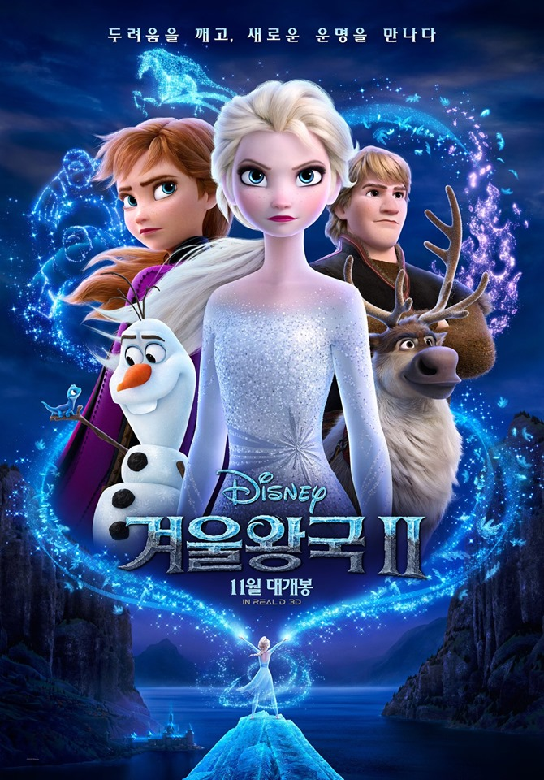

한스 크리스티안 안데르센(Hans Christian Andersen, 1805~1875)의 동화 《눈의 여왕》에서 모티프를 따온 영화로, 디즈니의 전형적인 캐릭터와는 달리 독립적인 여성이 등장해 자매가 시련을 극복해 가는 성장 과정을 그려냈다. 2013년 11월 27일 미국에서 개봉된 후 한국에서는 2014년 1월 16일 개봉하였다. 국내에서는 개봉 46일차에 역대 11번째로 1,000만 관객을 넘어섰고 영화 주제곡인 'Let it go', 'Do you want to build a snowman' 등이 큰 인기를 얻었다.
어렸을 때부터 마법의 힘을 가지고 태어난 아렌델 왕국의 공주 엘사는 동생 안나와 놀다 안나에게 해를 입히게 된다. 이 일로 엘사는 방 안에서 홀로 지내게 된다. 왕과 왕비가 갑작스럽게 세상을 떠나고, 어른이 된 엘사는 여왕에 즉위하게 되는데 즉위식에서 마법을 통제하지 못해 비밀을 들키게 되자 왕국을 떠나게 된다. 엘사의 마법으로 왕국이 겨울로 변하자 동생 안나는 엘사를 찾기 위해 얼음장수 크리스토프와 순록 스벤, 눈사람 올라프와 함께 모험을 떠나게 된다.
| 사진 | 이름 | 설명 |
|---|---|---|
엘사 | 아렌델 왕가의 장녀이며 안나의 언니이다. |
겨울왕국2 예고편
느낀점